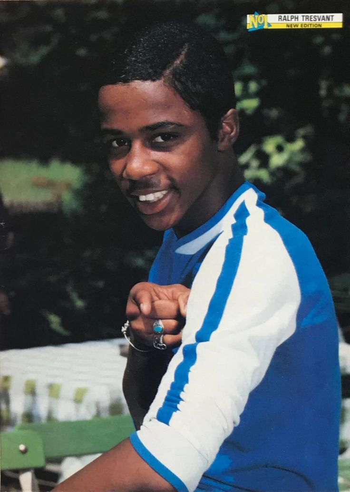
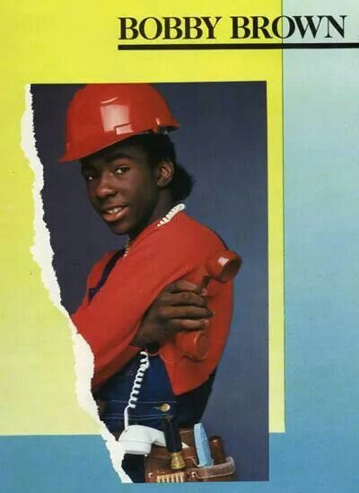
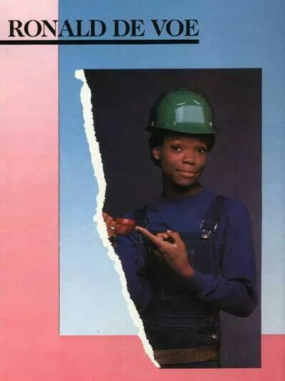
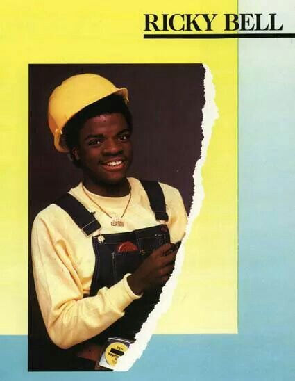
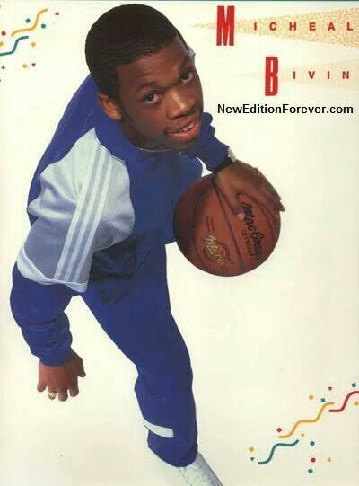
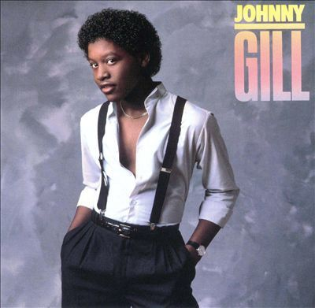

AMST 2650 Introduction to African American Literature Dr. Chelsea M. Frazier
1983
Candy Girl
48
Years of New Edition
2005
NBC Interview
6
Members
New EditionBobby BrownCandy GirlOrchard ParkWhitney HoustonNBC InterviewNew Jack SwingStreetwise RecordsCelebrity DebtBlack Narrative AgencyForm as FunctionWho Tells the Story?New EditionBobby BrownCandy GirlOrchard ParkWhitney HoustonNBC InterviewNew Jack SwingStreetwise RecordsCelebrity DebtBlack Narrative AgencyForm as FunctionWho Tells the Story?
AMST 2650 Digital Humanities Final Project Cornell University
Who Tells the Story?
New Edition's Candy Girl (1983) and Bobby Brown's NBC interview (2005): two forms, one Black voice, and the question of what each form does to what passes through it.
Obinna Njoku Trenton Banks Wyatt Tamamoto
AMST 2650 Introduction to African American Literature Cornell University
7 Research Pillars
The Black Sonic: Motown and Streetwise Records
The Black Look: Fashion and Masculinity
Historical Recurrence: Iconicity and the Past
Evolution: Iconicity Changing Over Time
Mimesis and Propagation: Appropriation by Society
Celebrity Debt: What Do Celebrities Owe?
The Future: Activism, Commerce, New Artists
Central Research Question
How does biographical narrative formation operate differently in an artist's music than in subsequent television media portrayals, and who controls the terms of that difference?
Bobby Brown, Every Little Step
"People need to understand that I love this industry with all my being. Entertainment is what I was bred for. Were you entertained? If you were, that's what matters."
Introduction
Form as Function
Why the medium matters as much as the message, and what that means for Black artists navigating public life.

R
Ralph Tresvant
Lead Vocals

B
Bobby Brown
Vocals

R
Ronnie DeVoe
Vocals

R
Ricky Bell
Vocals

M
Michael Bivins
Vocals

J
Johnny Gill
Vocals
The Album
Makes no claim before New Edition speaks
The listener enters the sound directly, without context, without a narrator, without a frame. Broadcast over radio and TV before the advent of streaming, it had a physicality, a presence you could hold. It can be taken in segments and as a comprehensive story of love found and lost. Nine tracks, no explanation required.
The Interview
Narrates Bobby Brown before he says a word
A kind of call and response that gives the interviewer control over the conversation, constantly bringing it back to Bobby's hardships. The anchor's framing is a form of repetition. It is a quick segment, an insert, an aside. The goal was to promote Being Bobby Brown, but the way it was done cast a tinted light on what was meant to be a moment of reclamation.
New Edition's Candy Girl and Bobby Brown's 2005 NBC interview are separated by 22 years and connected by the arc of one career. Analytically, they represent two irreconcilably different machines for producing public meaning about a Black artist.
The vinyl record opens onto its subjects without mediation. The music simply begins, mid-desire, mid-feeling, mid-life. The form is, structurally, an act of trust. The television interview operates by entirely different logic. The anchor's narration precedes the subject. Bobby Brown's career is summarized for the viewer before Bobby speaks a word. To respond is already to accept that the frame required response.
This is not a story about individual bias. It is a structural argument about what different media forms allow and foreclose for the Black subjects who pass through them, and why the form through which Black stories travel is never politically neutral. The issue is more complex than "album good, interview problematic." Both sides of that tension need to be held simultaneously for the argument to work.
Central Thesis
"While Black musicians exercise meaningful creative agency through their music, television media re-stages Black narrative as legible spectacle, centering the wound and evacuating the new skin."
The comparison of Candy Girl and the NBC interview is not biographical. It is a structural argument about media forms and their unequal consequences for Black self-representation. We focus on Brown because he is one of the most public and vocal members of New Edition with regard to reclaiming his image and his love.
Jennifer Roberts on Patience
The Power of Deceleration
Roberts's framework for immersive attention grounds the methodology of this project. Slow looking is not passive. It is a form of skilled apprehension that orients us to what the evidence actually contains.
On Student Resistance
"At first many of the students resist being subjected to such a remedial exercise. How can there possibly be three hours' worth of incident and information on this small surface? How can there possibly be three hours' worth of things to see and think about in a single work of art? But after doing the assignment, students repeatedly tell me that they have been astonished by the potentials this process unlocked."
Roberts, Jennifer. "The Power of Patience: Teaching Students the Value of Deceleration and Immersive Attention." Harvard Magazine, 2013. (40)
On Deceleration as Method
"Deceleration, then, is a productive process, a form of skilled apprehension that can orient students in critical ways to the contemporary world. But I also want to argue that it is an essential skill for the understanding and interpretation of the historical world."
Roberts, Jennifer. "The Power of Patience: Teaching Students the Value of Deceleration and Immersive Attention." Harvard Magazine, 2013. (42)
Connection to Method
The media's rapid narrative about Bobby Brown is exactly the kind of fast, unreflective looking that deceleration is designed to correct. The NBC anchor's framing is the three-second glance. This project is the three-hour sit.
Who Is New Edition
Five Boys from Roxbury
New Edition is a group of artists with solo careers who always come back together. Understanding their collective arc is essential to understanding what the album means and what any individual member's public story means.
New Edition formed in 1978 in the Orchard Park housing project in Roxbury, Massachusetts. The same neighborhood, years later, would become a site of criminalization for young Black men. The ideas of criminal justice that can tie Orchard Park to Trayvon Martin and to the context of Bobby Brown's NBC interview are not coincidental. They are structural.
Discovered by producer Maurice Starr, the group recorded Candy Girl for Streetwise Records in 1983. As children, they did not yet have the agency to control what the music said about them or what it meant. There is a subtle dissonance there: the album may have reflected their emotional experience, but the contractual and commercial terms were entirely outside their control. As Brown writes: "We each got $500 and a VCR, a Betamax, so we could watch our own videos."
New Edition is not simply a group that broke up and reformed. It is a group of artists with solo careers who come together to do their thing. That structure, a collective that separates and reunites, makes continued group analysis difficult. The timeline below attempts to capture the full arc of the group, not just Bobby Brown's individual trajectory.
Five teenagers from Orchard Park Housing Project, Roxbury enter a talent contest. The group that will define the grammar of group R&B begins here.
1983
Candy Girl Released
Platinum sales. $500 per member. The foundational contradiction: extraordinary creative output, extraordinary contractual disadvantage.
1986
Bobby Departs
Bobby Brown leaves the group. Immediately labeled a "bad boy" and troublemaker. Johnny Gill joins as his replacement. The group continues without losing its identity.
1988
Don't Be Cruel and Heart Break
Bobby invents New Jack Swing with Teddy Riley. New Edition releases Heart Break, one of the defining R&B albums of the era. Both succeed independently while remaining connected.
1990
Bell Biv DeVoe and Solo Careers
Ronnie DeVoe, Ricky Bell, and Michael Bivins form Bell Biv DeVoe, releasing Poison. Ralph Tresvant releases his solo debut. Michael Bivins signs Boyz II Men. The ecosystem expands.
1996
New Edition Reunites
All six members, including Bobby Brown, reunite for Home Again. The group that always comes back together does exactly that. Bobby's return signals reunion, not redemption.
2004
Heads of State Forms
Bobby Brown, Johnny Gill, and Ralph Tresvant form Heads of State, a supergroup within the New Edition family. The collaborative structure continues in new configurations.
2005
NBC Interview
Bobby appears on NBC to promote Being Bobby Brown. The anchor's frame arrives before Bobby does. The TV show is Bobby trying to reclaim his story. The interview is him being denied.
2017
BET Miniseries
The BET New Edition Story miniseries airs to massive viewership. New Edition reclaim their own narrative on their own terms, producing and co-writing the story of their career.
2023
Rock Hall Fan Vote
New Edition members use Instagram to rally fans, rising from 7th place to 1st in the Rock Hall fan vote. The shortest-form media becomes the most powerful tool of collective self-advocacy they have ever had.
"New Edition are not simply a music group who became famous. They are the latest instance of a structural position every generation of Black artists has occupied: the extraordinary creative contribution made under conditions of extraordinary contractual disadvantage."
Project Analysis
The Album
Candy Girl, Complete Analysis
Nine tracks. An emotional arc from desire to unresolved complexity. A record that was a hit when records were still a physical thing, with a materiality and presence that the interview's quick broadcast segment cannot replicate.
As an album, Candy Girl is a designed experience across time. It can be taken in segments and as a comprehensive story of love found and lost. The arc from desire through loss through camaraderie to unresolved complexity is a deliberate grammar. No anchor arrives at the end to tell you what it meant. The question of authorship is essential to acknowledge and then to complicate. Maurice Starr wrote these songs. New Edition performed them. As children, they did not yet have full agency over what the music said. But the emotional truth of the record belongs inescapably to the five teenagers who rendered it. There is a subtle dissonance there that is worth sitting with rather than resolving too quickly.
Track 01
Gimme Your Love
Opens mid-want. No introduction. Black desire as structural premise, not apology.
Track 02
She Gives Me a Bang
Ebullience as political act. Black boys insisting on pleasure in a cultural moment that wanted them threatening or invisible.
Track 03
Is This the End
The first turn toward loss. The question held open, not answered. Teenagers allowed to not know.
Track 04
Pass the Beat / Popcorn Love
The sharing of a beat between voices. Blackness as collective, not isolated.
Track 05
Candy Girl
The album's emotional center. Tresvant's falsetto reaches for softness in public: tenderness as agency.
Track 06
Ohh Baby
Structural breathing room. Simple affection between more complex emotional territory.
Track 07
Should Have Never Told Me
The most analytically charged track. What happens when you learn what is being said about you?
Track 08
Gotta Have Your Lovin'
Love as necessity: "gotta have" rewrites Black emotional expression from performance to survival requirement.
Track 09
Jealous Girl
The album closes on ambiguity. The refusal of easy moral clarity. The record ends open.
Close Readings
I
Close Reading, Track 05
"Candy Girl" and the Politics of Tenderness
Tresvant's falsetto required a specific kind of courage in 1983: to sing in falsetto as a young Black man before a national audience was to claim the right to be publicly soft. The song insists on Black masculine vulnerability as a form of presence rather than its negation. It does not perform toughness or emotional closure. It performs desire, care, and wonder. This is a political act that does not announce itself as one. The call and response harmonies enact the collective dimension of the album's emotional argument. These contrasting depictions illustrate the complexities in authentic Black family representations in the media and the desire for audiences to connect with the experiences of the characters, thus validating their lived experiences.
Formal Note
Tresvant's falsetto is not a stylistic choice separable from the song's meaning. It is the meaning's primary vehicle. The register itself is doing analytical work: claiming a form of Black masculine presence the culture simultaneously needed and was ambivalent about receiving.
II
Close Reading, Track 07
"Should Have Never Told Me" and the Pre-Framed Subject
Read forward to 2005, the resonance is striking. The anchor's pre-segment narration is precisely this: information about Bobby Brown that arrives before Bobby can speak. The viewer has been told something. And like the song's speaker, Bobby must navigate a world where that telling has already done its work. The song holds the complexity without resolving it. This is exactly what the interview format cannot do. The album's questions are held open. The interview's questions require answers.
Connection to Interview
What do you do when your story has been told before you get to tell it? The album holds the question open. The interview is forced to answer it. The TV show Being Bobby Brown was Brown trying to answer it on his own terms. The interview is him being denied that answer.
III
Close Reading, Track 03
"Is This the End" and the Right to Uncertainty
The title is a question, not a statement. The song holds the possibility of ending in suspension. This is the album granting its young subjects the right to not know. The right to be publicly uncertain is a privilege that the interview format structurally denies. Television journalism requires legible positions. The album's formal permission to exist in unresolved complexity is a form of dignity the interview format cannot provide.
Formal Argument
The right to be publicly uncertain is not available in the interview format. The album grants it freely. This asymmetry is one of the clearest demonstrations of why comparing these two forms matters.
The Interview
Being Bobby Brown: Structured Voice
The 2005 NBC interview where Bobby Brown appeared to promote his new reality show Being Bobby Brown. Just as the interviewer provided context that framed Brown's narrative, we need to do the same work to reconstruct that narrative.
The interview is not simply negative toward Bobby Brown. It is structurally constraining. The TV show Being Bobby Brown was Brown's attempt to reclaim his story on his own terms, to show who he and Whitney actually were rather than who the tabloids said they were. The NBC interview is him being denied that reclamation before it can fully happen. Both sides of that tension need to be held simultaneously for the argument to work.
What specifically made the light negative? The anchor's framing centered three things: Bobby's history of criminality and arrests, questions about the stability and health of his relationship with Whitney Houston, and the narrative of career comeback and recovery, which implies prior social depravity. The anchor literally says "changing the focus isn't so easy" at a moment when they could have, very easily, done exactly that.
The interview was posted by the Whitney Houston Platinum Club YouTube channel, and a significant portion of the comments reflect Houston fans giving Brown blame for what they claim was his negative influence on her life. Some even argue he caused her death. Whether correlated or not, and whether or not the accusations are true, this context shapes how the interview is received and why its framing matters.
The segment opens with the anchor summarizing Bobby's career, centering his arrests, his public conflicts, and the narrative of his relationship with Whitney Houston. This narration precedes Bobby's first word. The audience has been given a frame before the subject enters. The anchor notes "changing the focus isn't so easy" while demonstrating how easy it is to keep the focus exactly where they want it.
Frame Construction
"Tumultuous career" as the organizing concept. The frame emphasizes criminality, relational instability, and the idea of comeback, which implies prior failure. It is factually defensible in the narrow sense while being narratively distorting in the broader one. Bobby's genuine artistic innovation, his invention of New Jack Swing, his role as a creator rather than a casualty, receives no structural attention.
Bobby's Response
Bobby speaks confidently, directly, with evident intelligence and dignity. He pushes back where he can. But he is always responding, to the anchor's questions, to the established frame, to the accumulated cultural narrative that preceded him into the room. His confidence is real; his structural position is still that of a respondent, not an originator.
Whitney's Presence
The couple's relationship is the interview's organizing spectacle. Their love, their tension, their domestic life made visible for public entertainment. This is celebrity debt being collected. The transparency debt. The Being Bobby Brown show was Brown and Houston's attempt to discharge that debt on their own terms. The interview redirects those terms back to the anchor's frame.
Editorial Control
What ultimately airs is not Bobby's decision. The anchor chooses which segments to run, which questions to prioritize, how to contextualize the exchange. Bobby's agency exists within these decisions but never over them. This structural condition is invisible in the final broadcast, which presents itself as dialogue when it is, formally, something more like controlled release.
"Don't judge us. If you love us, and you like what we do as artists, please, just give us that. Because that's what we give the most of, that's what we concentrate on. We concentrate on being the best singers and entertainers for you. And when you try to break us down with our personal lives, that really affects us. So, if I can say anything to people right now, that'll be to pray for us to be better."
Bobby Brown, NBC Interview, 2005
Form as Function
Album vs. Interview: Skin, Scar, New Skin
Before comparing the two texts, we need to establish the terms. The Skin-Injury-Wound-Scar-New Skin structure reflects Black cultural and societal presence through history. The mapping here is deliberate.
Defining the Framework
Skin
The original, undamaged state. Black cultural formation before the wound is inflicted.
Injury
The event of harm. Structural exploitation, contractual disadvantage, the $500 payment.
Wound
The open, unhealed state. The bad boy label. The media's centering of Bobby's hardships over his creativity.
Scar
The wound that has closed but left its mark. The accumulated narrative that Bobby carries into the 2005 interview room.
New Skin
Redefined Black cultural formation. The album, the autobiography, the BET miniseries, the Instagram Rock Hall campaign.
The album represents emerging, redefined Black cultural formation leading to New Skin. It precedes the wound. In 1983, Bobby Brown is not yet a site of cultural anxiety. He is a teenager from Roxbury singing about love. The album exists in the territory of Skin: unmediated, self-presenting, not yet scarred by accumulated narrative.
The interview, by contrast, seeks to emphasize a message that inhabits the territory of Scar. By its very attempt at reclamation, it confirms the existence of the wound it is trying to heal. The interview is a story about uplift and recovery, which implies prior social depravity. Brown intends a message of creativity and agency. The form of the interview traps him in a scar-centered narrative even as he tries to demonstrate new skin.
The issue is not that the album is good and the interview is problematic. Both are more complex than that. The album was made by children who did not fully control its terms. The interview gave Bobby a national platform he used with genuine confidence and intelligence. The question is what each form structurally allows and forecloses, not which one is morally superior.
Candy Girl, The Album (1983)
NBC Interview, Bobby Brown (2005)
Framework Position
Skin and emerging New Skin. The album precedes the accumulated narrative. It exists before the wound is inflicted and named.
Framework Position
Scar territory. The interview confirms the wound's existence by organizing itself around Bobby's recovery from it. Uplift implies prior depravity.
Who Arrives First
The music arrives first. No narrator precedes New Edition. The listener enters the sound directly, without context or explanation.
Who Arrives First
The anchor arrives first. Bobby's career is narrated before his voice is heard. The frame is established before the subject enters it.
Duration and Attention
Nine tracks designed to be experienced across time. Can be taken in segments. Rewards sustained, immersive attention of the kind Roberts describes.
Duration and Attention
A quick segment. An insert. An aside. Designed for immediacy and impact rather than immersive attention. The form itself privileges the wound over the full life.
Bobby as Creator
Bobby's vocal presence on the album is origination. The music sets terms; the audience enters them. This is the formal privilege of the first speaker.
Bobby as Redeemer
The interview is a redemption event. Bobby addresses a narrative already established. The redeemer's position concedes that the prosecutor's narrative is the one that matters.
Black Love
Love as Subject and Spectacle
Black romantic love sits at the center of both texts. What each form does with that love reveals the structural difference between inhabiting an experience and performing it for an outside gaze.
Candy Girl is a love album. But Black love in the album is not presented as spectacle. It is the subject matter, rendered with full emotional texture. In the NBC interview, Black love appears differently: as the organizing spectacle around which the interview is partly structured. Bobby and Whitney's relationship, their love, their tension, their domestic life, is being consumed as entertainment. Tomlinson and Cox write that "understanding systemic factors impacting Black couples' relational dynamics is essential to advancing the understanding of how media images interact with relational experiences within this population."
Candy Girl, Love as Subject
Black Romantic Experience Without the Outside Gaze
The album's love songs do not perform Black romantic experience for consumption. They inhabit it. Tresvant's "Candy Girl," the collective romantic yearning, the harmonies: these are the feeling itself, presented on its own terms, trusting the listener to enter rather than observe. Unlike the typical white romance formula, Black professional success and love are celebrated without requiring white validation.
NBC Interview, Love as Spectacle
Bobby and Whitney Under the Celebrity Gaze
By 2005, Bobby and Whitney's relationship had been processed through years of tabloid coverage. The NBC interview services a transparency debt: access to the interior of a famous Black couple's relationship on the public's terms rather than their own. The Being Bobby Brown show was their attempt to reframe this on their own terms. The interview redirects that attempt back into the anchor's frame.
Key Scholarship
"Berry (1998) noted that television is more of a socialization tool than one's family, so we must consider the influence it has, not only on how we perceive Black families but also on how Black families view themselves."
Tomlinson, Allison and Brandale Mills Cox. "Portraying Black Love in the Media." (56)
"Manatu (2003) and Hooks (2000) have said Black women do not experience love in the media, and if they do, these images are often created by men who objectify their sexuality. Because of their history of being depicted as either hypersexual or asexual, Black women are usually excluded from conversations about romance or love (Warner, 2015)."
Tomlinson, Allison and Brandale Mills Cox. "Portraying Black Love in the Media." (59-60)
"What makes Black Love unique is that 'bonds of affection and love that are forced in the midst of profound trauma and oppression have a resiliency that can inspire and sustain generations.'"
Hooks, p.155, 2001. Cited in Tomlinson, Allison and Brandale Mills Cox. "Portraying Black Love in the Media." (61)
The Wilson Hypothesis
Some researchers point to what has been termed the "Wilson hypothesis," which suggests the formation of Black families has been directly affected by the disproportionality of Black women between the ages of 25 and 54 compared to Black men of the same age. This disproportionality of 0.87 Black men to women is correlated with higher rates of incarceration and unemployment among Black men, which began in the mid-1960s as a result of emerging police policies and civil rights issues. In models that adjust to make incarceration rates equitable among white and Black men, researchers found that the marriage rate would correlatively be adjusted by 78% among Black populations. This is not Tomlinson and Cox's framework. It is a general structural finding cited across multiple researchers including Caucutt et al., 2018.
Agency and Iconicity
The Double Bind of Black Icons
Drawing on Nicole R. Fleetwood's On Racial Icons: Blackness and the Public Imagination. Four case studies that illuminate the structural dynamics of Black iconicity and their application to New Edition and Bobby Brown.
Fleetwood argues that Black celebrities occupy a peculiar double position, standing simultaneously as testament to and contrast from the communities they represent. As she writes, "certain public images that have come to represent, symbolize, or substitute for a larger historical narrative of race and Blackness in the United States often carry a sort of public burden, in their attempts to transform the despised into the idolized." Their iconicity is constructed by forces largely outside their control. Racial iconicity, she argues, "hinges on a relationship between veneration and denigration and this twinning shapes the visual production and reception of Black American icons."
Trayvon Martin
Iconicity Beyond the Individual
Fleetwood's treatment of Martin is not a dark argument. She was heartened to see so many people participate in the movement. Her point is that Martin's image was appropriated, even if for his own cause and a good cause. The hooded selfies that circulated were acts of solidarity, but none of those protesters were Trayvon Martin. The point is that images and iconicity are often beyond the control of the person they represent, taking on societal, cultural, and symbolic meaning that exceeds any individual. Appropriation may be a prolific and possibly inevitable reality. This connects directly to Orchard Park, to criminalization, to the frame that Bobby Brown walked into in 2005.
"There is little doubt that a Black teenage boy is never seen as an 'ordinary' American, let alone an 'ordinary' child who deserves protection and guidance of adults and public authorities."
Fleetwood, Nicole R. On Racial Icons: Blackness and the Public Imagination. (15-16)
Barack Obama
Proactive Image Management
Obama's section addresses the ethics of Black public figures who have resources attempting to frame their own image positively. Obama is, by his position, a political icon. Brown is a cultural and artistic one. Their spheres differ significantly even if the structural dynamics of image management rhyme. Both demonstrate that the careful cultivation of image has a long history as a form of Black self-determination, traceable through Frederick Douglass's use of photography as a political tool. Douglass understood that the democratization of image-making was itself a form of power, and Obama's and Brown's respective attempts to control their own narratives operate in that same tradition.
"Douglas strategically visualizes his journey from slave to orator, writer, and abolitionist. Moreover, the repetition in form and composition of his photographic portraits demonstrate that 'self is determined by the right to self-possess and possess rights.'"
Fleetwood, Nicole R. On Racial Icons. Citing Wexler, Laura. (40)
Diana Ross
Black Music Celebrity and Perceptions of Excess
Ross's case illuminates the specific dynamics of Black music celebrity in relation to the racialized condemnation of Black excess. In the Motown system, artists were molded toward mainstream acceptability in ways that "refuted notions of Black excess." Bobby Brown was a married multimillionaire with an outgoing public image who was systematically framed as corrupting and excessive. The framing of Brown as excessive follows the same cultural logic traced through Ross's career. His wealth, his marriage, his creative output were all subordinated to a narrative of disorder and excess that the form of the interview reinforced rather than challenged.
"Celebrity culture seems to provide a continual reaffirmation that upward mobility is possible in America and reinforces the belief that inequality is the result of personal failure rather than systematic social conditions."
Sternheimer, Karen. Celebrity Culture and the American Dream. Cited in Fleetwood, Nicole R. On Racial Icons. (70-71)
LeBron James and Serena Williams
Spectacle as Platform and Its Limits
Fleetwood's analysis of LeBron and Serena draws parallels between athletic spectacle and physical vulnerability. The connection is this: the same visibility that makes Black athletes icons also makes them targets. When LeBron left Cleveland for Miami, the public undoing of his image was immediate and total. Dan Gilbert's open letter placed the full weight of racial iconicity on one Black athlete while absolving all the corporate interests who had profited from constructing that icon. Black celebrity status is never fully secure. The possibility of being attacked, whether physically or symbolically, is a structural condition of Black public life that Fleetwood traces from Trayvon Martin to the sports arena. New Edition in 1983 were spectacle too, and they had very little leverage over what that spectacle communicated.
"The ability to be wounded or murdered because of one's racialization, its likelihood and shattering consequences, is in and of itself a recurring wound, a collective inheritance, the keloid of a society built on racial exploitation, violence, and genocidal annihilation."
Fleetwood, Nicole R. On Racial Icons: Blackness and the Public Imagination. (112)
"What becomes of our icons, those venerated as well as denigrated, our outcasts, if we dream together in full recognition of our history and presence together?"
Fleetwood, Nicole R. On Racial Icons: Blackness and the Public Imagination. (117)
Celebrity Debt
What Do Celebrities Owe?
The celebrity debt framework explains the logic driving the NBC interview's demand for Bobby Brown's self-accounting. Four debts, four different claims on Black public figures.
I
Transparency
The Disclosure Debt
The public believes it has purchased access to the interior of a celebrity's life through the attention economy. Bobby and Whitney's relationship becomes legible as a debt payment. The reality show Being Bobby Brown was this debt being discharged on their own terms. The interview redirected those terms back to NBC's frame. Bobby reflected: "People wondered whether we were embarrassed by our depiction on the show, but we laughed our ass off throughout the whole thing. It was therapy for us."
II
Advocacy
The Platform Debt
Celebrities at a certain level of cultural visibility are expected to broadcast their stances on social issues. Bobby Brown's status as a Black celebrity carries this expectation even when the interview never explicitly names it. But New Edition have chosen not to be political because they are, at their core, a group of guys who love to meet up and make music together. Their activism has operated through their music's emotional register, not explicit political statement. This is itself a political position.
III
Productivity
The Output Debt
Sternheimer argues that celebrity culture requires continuous output, continuous proof of achievement. Bobby's narrative in the interview is partly organized around demonstrating continued relevance. The decade-long arc from Don't Be Cruel to 2005 must be accounted for. His arc of success and struggle is itself the product being offered to the audience.
IV
Perfection
The Social Debt
People look up to celebrities and feel they deserve to know the people they put on a pedestal. If a celebrity fails to measure up to the pinnacle of human standards, they often lose their platform and standing. LeBron's fall from grace after leaving Cleveland is the clearest modern example. Brown challenges this idea of perfection as necessary for celebrity by sharing his shortfalls openly and still coming out on top. The autobiography does this most explicitly: shamelessly, though not remorselessly, acknowledging all facets of his life. This is itself a form of resistance.
"When the media began to write about me and Whitney together, they questioned everything about my character. It hurt me to my core. I felt like it was destroying what I had created as an entertainer."
Bobby Brown, Every Little Step (218)
Mimesis and Propagation
The Form Travels. The Credit Does Not.
How New Edition's template was replicated across American popular music, and what Lipsitz's framework tells us about who benefits from cultural mimesis.
Lipsitz documents how musical forms propagate across communities with the form traveling while the credit and capital remain behind. New Edition established the grammar of group R&B in 1983. That grammar was then used to build New Kids on the Block by Maurice Starr using the exact same playbook. Michael Bivins closed the loop by signing Boyz II Men. The structural template traveled; the financial and cultural benefit did not accrue proportionally to its originators.
Nelson George writes that within the Motown system, artists were "molded, sometimes against their stylistic preferences, toward mainstream acceptability." The Motown machine and the Streetwise Records machine operated by the same structural logic. Bivins's move behind the scenes as a producer and executive represents the most direct exercise of agency over this system: attempting to occupy the position of structural power rather than only the position of labor.
1
Origin
New Edition, Orchard Park, Roxbury. 1978 to 1983. Five Black teenagers from a housing project establish the grammar of group R&B. The template is set. The ownership is not theirs.
2
Extraction and Replication
Maurice Starr assembles New Kids on the Block using the exact same template. The form, the choreography, the vocal division, the emotional accessibility travel intact. The Roxbury origin and the specificity of Black experience do not travel with them.
3
Bobby Brown's New Jack Swing
Brown's departure produces New Jack Swing with Teddy Riley. Don't Be Cruel (1988) becomes the template for a decade of popular music. Again the form travels. Again the originator's proportional benefit does not follow.
4
The Acknowledged Inheritance
Michael Bivins signs and co-produces Boyz II Men, who explicitly cite New Edition as their template. A partial correction: an originator participating structurally in the propagation of the form he helped create.
5
The Motown Parallel
Fleetwood's analysis of Diana Ross illuminates New Edition's structural position. Gordy built Motown "by selling the creations of other Black Americans." The artists were the product; the system was the business. New Edition's relationship to Streetwise Records follows this template precisely.
Social Status and Career Standing
Black as Blight
How the framing of Bobby Brown's "tumultuous career" participates in a broader cultural pattern of reading Black public struggle as confirmation of a thesis about Black life itself.
"Black as blight" names a specific ideological formation in American media: the tendency to read the struggles of Black public figures not as individual events but as confirmation of a broader thesis about Black life. This formation operates through selection and through framing. The vocabulary used, the contexts invoked, the moral weight assigned are all choices. Ideas of criminalization that connect Orchard Park to Trayvon Martin to Bobby Brown's interview are not coincidental. They are part of the same structural logic.
1
The Mechanism: Selection
The NBC interview selects "tumultuous career" as the organizing descriptor. The extraordinary creative achievement of the New Jack Swing era and the genuine artistic innovation of Bobby's solo work receive no structural attention. The anchor literally says "changing the focus isn't so easy" at a moment when changing the focus would have been extremely easy.
2
The Mechanism: Framing
The framing of Bobby as the man who "corrupted" Whitney Houston assigns him a specific role in a morality play organized around Black excess and decline. This framing was racially inflected even when it did not announce itself as such. The Whitney Houston Platinum Club channel where the interview is posted is itself a site of this framing, where Houston fans attribute her death partly to Brown's influence.
3
The Mechanism: Generalization
Individual failures attributed to Black public figures are often treated as evidence of a general pattern. White celebrities' failures tend to be read as individual; Black celebrities' as representative. Entman and Rojecki's empirical research documents this structural asymmetry across decades of American media.
4
Bobby's Own Account
Brown writes: "When I look back on the evolution of my bad-boy reputation, I realize that it was only after I got together with Whitney that I really became the bad boy, at least in the eyes of the media. Before Whitney, it wasn't open season on my personal life. When the media began to write about me and Whitney together, they questioned everything about my character."
5
The Counter: What the Album Refuses
Candy Girl refuses the "Black as blight" frame entirely, not because it is oppositional, but because it precedes the frame. In 1983, Bobby Brown is not yet a site of cultural anxiety about Black excess. He is a teenager from Roxbury singing about love. The album's formal position outside the media machinery of celebrity pathology is one of its most analytically important features.
Every Little Step
The Autobiography as Image Remaking
Bobby Brown's memoir is a third text: a form that allows something neither the album nor the interview quite can. The selected quotes are meant to reflect the brutal honesty of the autobiography as a work of image remaking.
Every Little Step is, formally, an act of image remaking. Brown works to acknowledge all facets of his life: good and bad, willful and uncontrollable, self-inflicted and imposed. His anecdotes shamelessly, though not remorselessly, reflect upon his past immaturity and mistakes to provide a more complete picture of his lived experiences. This completeness is itself the argument against the media's reductive narrative.
On Origins and Family
On His Parents
"Both of my parents had jobs: my mother, Carole, was a teacher and my dad, Herbert, was a construction worker building big skyscrapers downtown, and there was plenty of love flowing through the Brown household. We were in a good place."
Every Little Step (13)
On His Father's Work Ethic
"Anytime he got the chance, my father would show us the buildings he had helped to construct. 'A workingman is everything,' he would tell us. 'When you got work to do, you work hard, do your job and go on home.'"
Every Little Step (13)
On Community in Orchard Park
"Our family was one of the few in Orchard Park that had both a mother and a father in the household, so we were looked upon as the brown-skinned Brady Bunch. And my mother was one of those generous Mother Teresa types who would welcome and care for anybody who was in need."
Every Little Step (14)
On Style and Self-Presentation
"I've always been drawn to style, figuring out how to present myself in a way that's different from everybody else."
Every Little Step (16)
On Violence, Loss, and Witness
On His Mother's Arrest
"When I looked out the window, I saw my mother in an angry confrontation with the police. One of the officers lifted his billy club and hit her in the face with it. He busted her eye and she staggered back. I started crying hysterically as I watched them put her in handcuffs and whisk her away."
Every Little Step (24-25)
On Jimmy's Death (a Childhood Friend)
"I had seen a couple of people get shot in OP by then, but this was the first time violence had struck somebody I knew, practically a member of my family. Most of us were still just little kids trying to have fun. We hadn't made the transition to any type of killer mind-set. It seemed that Jimmy's death led to a flood of young boys having their lives snuffed out."
Every Little Step (32-33)
On Whitney and Marriage
On Their First Meeting
"As we played piano together, our hands touched. Then we shared a long, soft kiss. It was like a scene straight out of Casablanca, some old romantic flick. I knew what was about to happen."
Every Little Step (130)
On Proposing
"When I decided to propose, I went and had a conversation with her father. I wanted to do it old-school, like a perfect gentleman."
Every Little Step (138)
On Media Pressure on the Marriage
"From the moment we announced to the world that we were going to get married, we became the target of a media and public campaign that had the single goal of tearing us apart. Were we really the only ones in the world who wanted our marriage to succeed? Sometimes that's exactly how it felt."
Every Little Step (141)
On Their Public Image
"The emasculating image of me as a leech continued throughout our marriage. When our marriage ended, it only intensified. That's one of the main reasons why I walked away without asking for a dime, even though I came into the marriage with tens of millions of dollars."
Every Little Step (215)
Voices from the Autobiography
Ralph Tresvant
On the "Bad Boy" Origin
"In my opinion, this moment is where the whole 'bad boy' reputation started, when he left the group. Despite what was going on behind the scenes with the shady financing and deceitful managers, Bobby got labeled as arrogant and uncooperative. A troublemaker. A bad boy."
Tommy Brown (Bobby's Brother)
On Bobby's Character
"The world wants him to be crazy, they like when he acts that way, but at some point it's too much for him to handle. Everybody wanted to know about their relationship, but with a lack of privacy and way too much attention, a relationship is stressful."
Leolah Brown (Bobby's Sister)
On His Generosity
"Bobby would walk around with a checkbook and write checks for anybody who was in need. He paid people's rent; he paid for people's funerals. He would never ask questions or ask for proof. And the public would never hear about any of it."
Landon Brown (Bobby's Son)
On Privacy and Pressure
"People don't get that he's human; he has to deal with human things. The world wants him to be crazy, they like when he acts that way, but at some point it's too much for him to handle."
Alicia Etheredge Brown (Bobby's Wife)
On How They Found Each Other
"It took maybe a year of being around each other, him sleeping on my couch, going through his divorce, actually moving into my house, before anything happened between us. How did the romance start? It was just a process of us growing closer, sharing intimate things. I just realized I loved him and adored him."
Leolah Brown on Whitney
On Why Whitney Loved Bobby
"She said that Bobby was never anybody but himself, which was important to her. She said she had dated men who were always acting too timid and too shy because of who she was. But she said Bobby was different. He didn't give a damn. He was himself, take it or leave it."
Member Profiles
The Six and Their Trajectories
New Edition is a group of artists with solo careers who come together to do their thing. Each trajectory illustrates a different relationship to the celebrity debt framework and the group's collective iconicity.
R
Ralph Tresvant
b. May 15, 1968, Roxbury
Lead Vocalist
Tresvant's falsetto was New Edition's emotional center and the primary vehicle of Candy Girl's analytical argument. Quiet by temperament, he navigated celebrity debt by limiting public disclosure rather than offering the transparency the tabloid press demanded.
The project's primary analytical subject. The most public and vocal member with regard to reclaiming his image and his love. His departure in 1986, his invention of New Jack Swing, and his marriage to Whitney Houston each represent a different chapter in the negotiation between Black artistic agency and media co-optation.
DeVoe, Bell, and Bivins formed Bell Biv DeVoe in 1990, producing Poison. Their public image was collectively managed, distributing the celebrity debt load across three people rather than concentrating it on one.
Bell's voice anchored BBD's harmonic structure. His arc illustrates one resolution of the celebrity debt dilemma: remain associated with group contexts rather than pursuing an individual public profile that would invite individual scrutiny.
Bivins's transition from performer to manager and producer, signing Boyz II Men and Another Bad Creation, represents the most direct exercise of agency over the system New Edition had navigated as artists: occupying the position of structural power rather than only the position of labor.
Gill joined in 1987 following Bobby Brown's departure, bringing a gospel-rooted vocal style. His presence complicates the icon: the brand was not synonymous with any fixed membership. The iconicity outlasted the personnel and proved transferable.
Creator, redeemer, icon, spectacle, and the question of which of these he was allowed to be when.
Phase One: The New Edition Years (1983 to 1986). Bobby was the group's most physically dynamic performer. His dancing set the choreographic standard. As children, New Edition did not have full agency during Candy Girl. The music may have reflected their emotional experience, but the contractual and commercial terms were entirely outside their control. A subtle dissonance worth sitting with rather than resolving.
Phase Two: The Creative Peak (1988 to 1992). Don't Be Cruel (1988), co-produced with Teddy Riley, invented New Jack Swing. Bobby's instincts about his own artistic direction had been right. He was not following a trend. He was making one. This is the period in which Bobby Brown was unambiguously a creator, setting terms rather than responding to them.
Phase Three: The Marriage and the Tabloid Years (1992 to 2005). His 1992 marriage to Whitney Houston changed the terms of his celebrity in ways neither of them fully controlled. Bobby writes: "In my twenties, I fell in love with the biggest music star on the planet. Our marriage kept more than a few gossip tabloids in business." The Being Bobby Brown reality show was their attempt to reclaim their story on their own terms.
Phase Four: The NBC Interview (2005). The interview is the site where all of these phases converge. The TV show is Brown trying to reclaim his story. The interview is him being denied. He is the redeemer in this moment, not the creator. And the form of the interview ensures that his redemption, however confident, is always happening inside someone else's terms.
The Future
New Edition's Continuing Story
Four dimensions of New Edition's relationship to what comes next: activism, commerce, new artists, and the question Fleetwood ends with about what we dream together.
New Edition and Activism
The Platform Debt, Revisited
New Edition have chosen not to be political because they are, at their core, a group of guys who love to meet up and make music together. Bobby Brown says in the interview: "Don't judge us. If you love us, and you like what we do as artists, please, just give us that. Because that's what we give the most of. We concentrate on being the best singers and entertainers for you." They love what they do, but at the end of the day they are human, and if others choose to idolize them, they have to take the beauty with the pain.
New Edition and Commerce
Sponsorships, Commercialism, Ownership
The trajectory from $500 and a Betamax to contemporary commercial partnerships is a story about structural change and structural persistence. The Rolling Stone article on New Edition's Rock Hall fan vote documents continued institutional under-recognition even as commercial value is acknowledged. The group's relationship to commercialism is complicated by decades of having their template replicated by others who retained a larger share of the financial benefit.
New Edition and Social Media
Shortest-Form Media, Leveraged
The Instagram accounts of all six members demonstrate shorter-form media being leveraged from the other direction. When New Edition rallied fans through Instagram for the Rock Hall fan vote, they rose from 7th place to 1st. The shortest-form media became the most powerful tool of collective self-advocacy they had ever had. Their Instagram posts showing themselves in 7th place are themselves primary texts about who tells the story now and how the form has changed since 1983 and 2005.
Fleetwood's Closing Question
Dreaming Together
Fleetwood closes On Racial Icons with a question rather than a conclusion: "What becomes of our icons, those venerated as well as denigrated, our outcasts, if we dream together in full recognition of our history and presence together?" New Edition's legacy is not settled. The BET miniseries, the continued fan engagement, the Instagram presence of all six members, the Rock Hall debate: these are all ongoing negotiations about what the group means and who gets to say so.
"Still, I know that as a Black woman, I remain in bondage. I know that all Black people do in spite of the tremendous advances we have made over the century. That's because the one thing none of us has been able to destroy completely is hate. If God gave me one job in life, it is to help a world in which we are all just people."
Ross, Diana. Secrets of a Sparrow. Villard Books, 1993.
For the Exceedingly Curious
Sources, Annotated
The most essential primary texts, theoretical frameworks, and scholarship grounding the project's analytical claims.
01
Primary Source, Album
New Edition. Candy Girl. Streetwise Records, 1983. Produced by Maurice Starr.
The project's first primary text. Analyzed through close readings of "Candy Girl," "Should Have Never Told Me," and "Is This the End," and compared directly against the NBC interview throughout the Form as Function section.
02
Primary Source, Interview
Brown, Bobby and Houston, Whitney. Being Bobby Brown. NBC News Report and Interview. NBC, 2005. Archived via the Whitney Houston Platinum Club, YouTube.
The project's second primary text. The TV show Being Bobby Brown was Brown's attempt to reclaim his story on his own terms. The interview is him being denied. Analyzed as a formal structure: who arrives first, what questions are asked, who controls the editorial decisions, and how the frame is built before Bobby speaks a word.
03
Primary Source, Autobiography
Brown, Bobby. Every Little Step: My Story. Dey Street Books, 2016.
A third primary text. The selected quotes are meant to reflect the brutal honesty of Brown's autobiography as a work of image remaking. Brown works to acknowledge all facets of his life: good and bad, willful and uncontrollable, self-inflicted and imposed. This completeness is itself the argument against the media's reductive narrative.
04
Book, Theoretical Framework
Fleetwood, Nicole R. On Racial Icons: Blackness and the Public Imagination. Rutgers University Press, 2015.
The project's primary theoretical framework. Four case studies on Trayvon Martin, Obama, Diana Ross, and LeBron James each illuminate a different dimension of how Black iconicity is constructed, contested, and exploited. Fleetwood's argument that racial iconicity "hinges on a relationship between veneration and denigration" shapes the entire iconicity section. Note: this text was authored by Nicole R. Fleetwood, not Robin Boylorn Sewell.
05
Essay, Methodology
Roberts, Jennifer. "The Power of Patience: Teaching Students the Value of Deceleration and Immersive Attention." Harvard Magazine, 2013.
The methodological grounding for this project. Roberts argues that deceleration is "a productive process, a form of skilled apprehension." Applied directly to the problem of fast media narratives about Black public figures. The NBC anchor's framing is the three-second glance. This project is the three-hour sit.
06
Article, Black Love in Media
Tomlinson, Allison and Brandale Mills Cox. "Portraying Black Love in the Media: Bridging the Gap Between Representations and Real-Life Experiences of Black Romantic Relationships and Families." 2020.
Primary framework for the Black love section. Provides the CRT analysis, documentation of the Wilson hypothesis (a general structural finding, not Tomlinson and Cox's own creation), and extensive scholarship on Black romantic representation in media.
The wound, scar, and new skin framework used throughout this project comes from Hartman's methodology of recovering Black narrative from institutional framing. Her argument that institutional documents center the wound at the expense of the full life is the direct theoretical basis for analyzing how the NBC interview frames Bobby Brown. The album represents New Skin; the interview traps Brown in Scar territory.
08
Book, Black Love
hooks, bell. All About Love: New Visions. William Morrow, 2000. Also: Salvation: Black People and Love. William Morrow, 2001. Also: We Real Cool: Black Men and Masculinity. Routledge, 2004.
hooks's argument that Black love has "a resiliency that can inspire and sustain generations" provides the theoretical center of the Black love section. We Real Cool provides essential context for reading Black masculine identity and the specific forms of public scrutiny to which Black men are subjected.
09
Book, Music Industry History
George, Nelson. The Death of Rhythm and Blues. Pantheon Books, 1988. Also: Where Did Our Love Go? The Rise and Fall of the Motown Sound. St. Martin's Press, 1985.
Essential for contextualizing New Edition's structural position within the music industry. George documents how Motown built itself "by selling the creations of other Black Americans," a structural template that prefigures New Edition's relationship to Streetwise Records and Maurice Starr.
10
Book, Celebrity Culture
Sternheimer, Karen. Celebrity Culture and the American Dream: Stardom and Social Mobility. Routledge, 2011.
Sternheimer's argument that celebrity culture "reinforces the belief that inequality is the result of personal failure rather than systematic social conditions" is applied throughout the celebrity debt framework. Her analysis of celebrity as a capitalist entity grounds the transparency and productivity debt arguments. Cited directly within Fleetwood's analysis of Diana Ross and LeBron James.
11
Book, Cultural Appropriation
Lipsitz, George. Dangerous Crossroads: Popular Music, Postmodernism, and the Poetics of Place. Verso, 1994.
Provides the theoretical grounding for the mimesis section. Lipsitz documents how musical forms propagate across communities with the form traveling while credit and capital remain behind. Directly applicable to the New Edition to New Kids on the Block template chain and to Bobby Brown's invention of New Jack Swing.
12
Primary Source, Social Media
New Edition, Bobby Brown, Ralph Tresvant, Ricky Bell, Michael Bivins, Ronnie DeVoe, Johnny Gill. Official Instagram accounts, 2023 to present.
The members' continuing social media presence demonstrates shorter-form media being leveraged from the other direction. Their Instagram activity, including posts showing them in 7th place in the Rock Hall fan vote before rallying to 1st, is itself a primary text about who tells the story now and how the form has changed since 1983 and 2005.